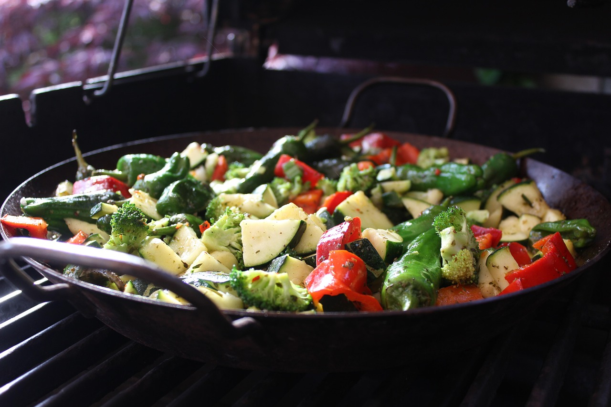
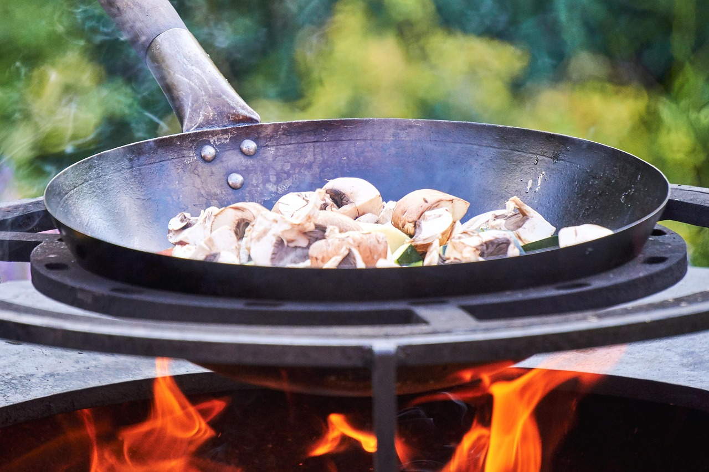

Kochwelt
Tipps, Tricks & Rezepte
Rezept des Tages
Name deines Rezeptes

Das ist ein Platzhalter für eine kurze Beschreibung des Rezepts.
Lust auf was Neues?


Pfanne vs. Wok - Was ist besser?

Pfanne
Sorgt für eine gleichmäßige Hitzeverteilung und eignet sich vor allem für klassisches Braten. Je nach Form, flacher Rand für Omlettes oder höherer Rand für Pasta und Saucen, ist sie auf bestimmte Gerichte spezialisiert

Wok
Erhitzt sich schnell und arbeitet mit wechselnder, oft sehr hoher Hitze, wodurch Zutaten meist geschwenkt statt gewendet werden. Durch seine tiefe Form ist er vielseitig einsetzbar z.B. zum Braten, Dämpfen, Frittieren oder schnellen Anrösten.